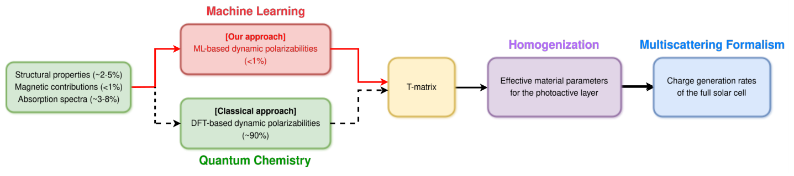
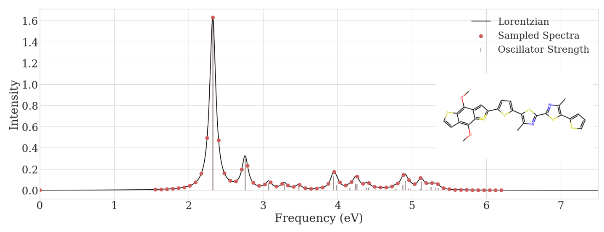
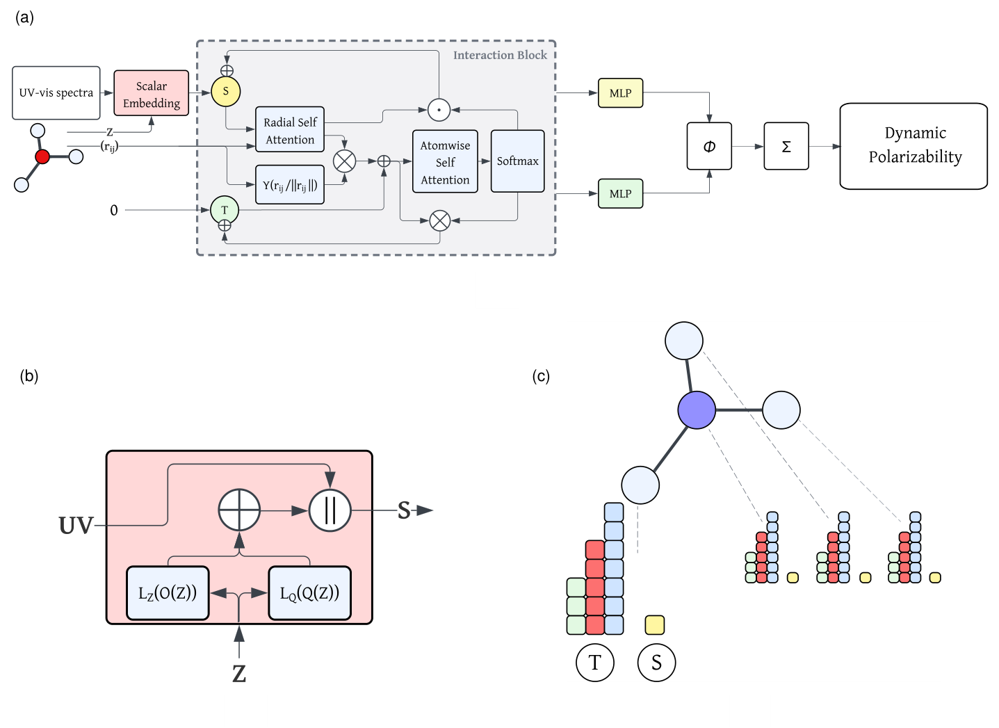
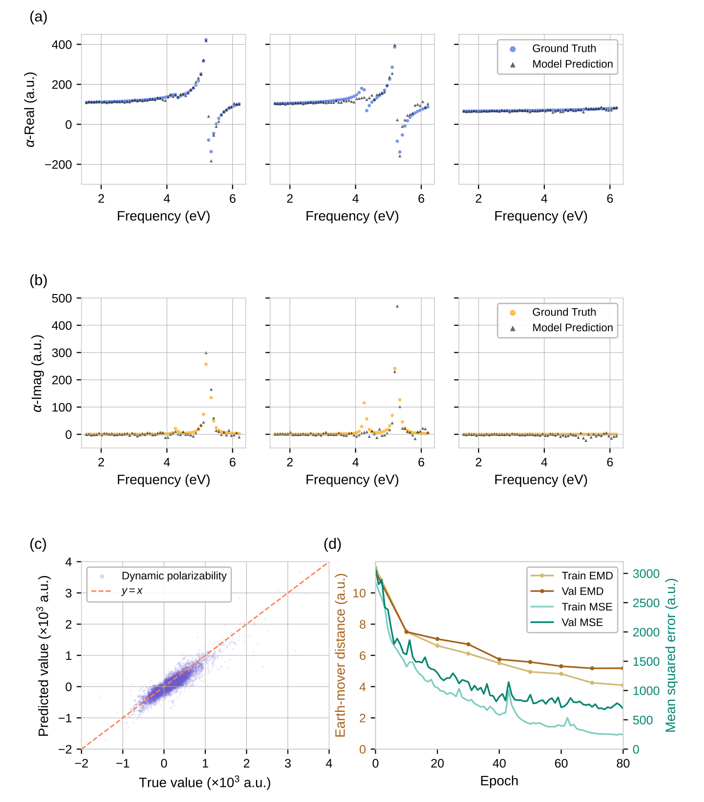
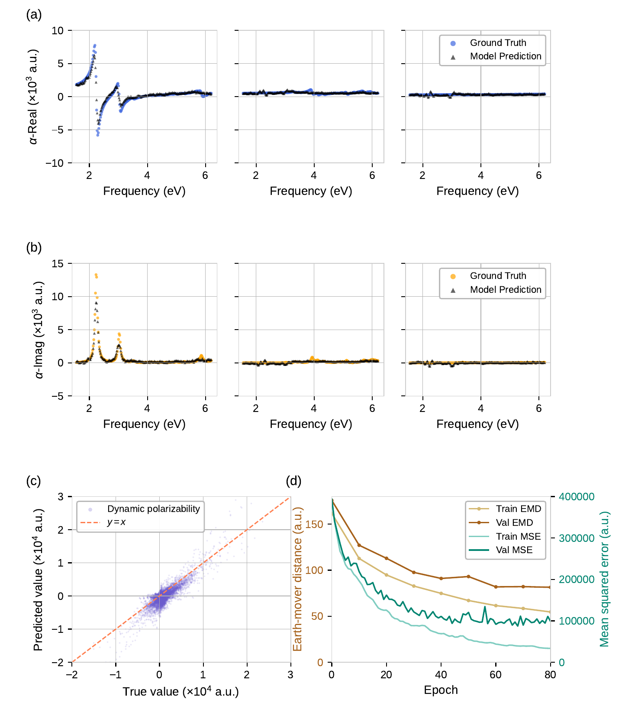
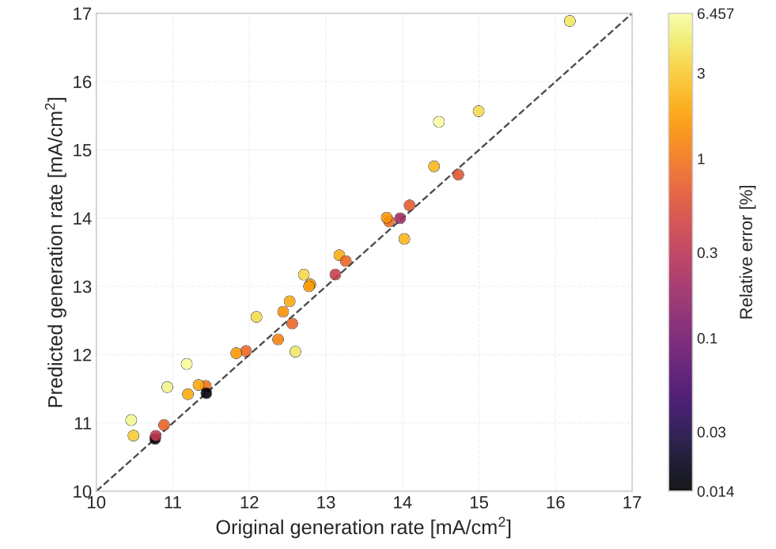

动态极化率学习：从分子几何与光谱，连接到器件光学模拟
论文原文 ↗论文：Accelerating dynamic polarizability calculations of organic molecules using equivariant graph neural networks，Houssam Metni、Maria Kraus 等，2026。arXiv｜
筛选光活性分子，需要完整的光响应
一个有机分子在哪些波段吸收，只是光电材料筛选的一部分。若要模拟它组成的薄膜与器件，还要知道电子云对不同方向光场的响应，以及这种响应怎样随频率改变。动态极化率张量正是连接分子结构与光学行为的基本量，逐分子、逐频率进行含时密度泛函理论 TD-DFT 计算却很昂贵。
作者提出等变图神经网络，结合三维分子几何与 UV–vis 光谱，直接预测频率相关、复数形式的动态极化率张量。研究不仅比较预测谱形和量值，还把输出送入有机光伏器件的光学流程，检验最终电荷载流子产生率与 TD-DFT 输入计算的一致性。
结构与光谱各提供什么信息
极化率描述外电场诱导偶极矩的能力。由于分子有方向性，它表现为 3×3 张量：沿某个方向施加电场，也可能诱导另一个方向的响应。光场随频率振荡，电子响应还带有相位差，因此张量包含实部和虚部，分别体现色散和吸收。
三维几何给出原子如何排列，帮助确定方向差异；UV–vis 光谱给出电子跃迁出现的能量和强度，帮助模型定位响应的频率结构。作者让两种信息互补，学习张量各分量随频率的形状与大小。

原图 Fig.1。分子结构和光谱进入模型，预测的动态极化率转换为分子散射表示，再形成材料等效光学性质并进入器件模拟。
训练数据包括 QM9 中 5,160 个小分子和 HOPV15 中 347 个光伏相关分子。作者先优化结构，再用 TD-DFT 求参考动态极化率和电子跃迁。离散跃迁按 0.05 eV 半高全宽展宽并叠加，形成模拟 UV–vis 光谱；动态极化率在 1.55–6.2 eV 的 61 个点计算，再用有理函数插值得到 241 点密网格，用于更细的谱形学习。

原图 Fig.2。灰线表示离散电子跃迁的位置与强度，黑线是展宽后光谱，红点为网络读取的采样值。
等变网络怎样输出随频率变化的张量
网络从 DetaNet 扩展而来，以原子为节点，以原子之间的距离和方向组织信息传递。每个原子的初始特征包含元素和电子结构描述符，并接入整条采样光谱。经过多次交互后，原子特征同时携带局部化学环境与分子的光谱信息，再汇总到整体响应。
等变的意思是：把分子旋转，网络内部的方向特征与最终张量也按物理规则旋转。作者将输出分成平均响应和方向差异，结合标量与张量通道组装各频率的实部和虚部。这样，一次前向计算就产生整个频率网格的响应。

原图 Fig.3。a 展示输入、原子交互与分子响应输出；b 展开元素和光谱的初始编码；c 展示不同旋转性质的特征通道，方向信息贯穿网络。
训练时，实部先减去静态极化率 α(0)，使网络学习相对基准的频率变化；使用时再加回静态基准。对一个新分子，准备优化几何、模拟光谱与所需静态性质后，模型即可输出动态电极化率，进入下游光学计算。
光谱输入使两个数据集上的误差约减半
作者将两套数据各按 90%/10% 随机划分，分别评价未参与训练的分子。比较的直接问题是：在结构之外加入光谱，能否更好重现共振与方向响应？
在 61 点任务中，QM9SPol 的张量 RMSE 从仅结构输入的 48.7 降至结构加光谱的 22.1，R² 从 0.55 提高到 0.86；HOPV15 的 RMSE 从 586.6 降至 261.9，R² 从 0.30 提高到 0.82。RMSE 使用极化率的原子单位，两套数据分别比较，均显示输入电子跃迁信息带来明显收益。

原图 Fig.4。上两行比较 xx、yy、zz 分量的实部与虚部，圆点为参考，三角为预测；下方给出测试值对照和训练过程。谱线展示频率结构与方向差异的重现。

原图 Fig.5。展示 HOPV15 分子三个方向分量的参考与预测，以及测试误差和训练曲线。模型同时处理更大的响应幅度、方向差异与共振峰。
作者还采用推土机距离评价光谱形状，可以理解为把一条分布搬运成另一条分布所需的代价，用来补充逐点误差。HOPV15 的 241 点模型将 RMSE 进一步降至 231.6，并改善谱形距离，使输出更细致地描述连续频率响应。
分子预测怎样影响器件产生率
对 35 个 HOPV 测试分子，作者将预测极化率转换为 T 矩阵。T 矩阵描述分子如何将入射光转换为散射光；大量分子的集体散射响应进一步形成材料的等效介电性质。随后，每个受体与供体聚合物 PM6 按 1∶1 体积比混合，组成 200 nm 光活性层，放入含透明电极、传输层与银接触的层状太阳能电池模型。
散射矩阵方法求出各层光场，再结合太阳光谱积分，得到以电流密度单位表示的电荷载流子产生率。作者让机器学习极化率和 TD-DFT 极化率分别走同一条流程，比较分子响应替换后最终器件输出的变化。
两种输入得到的产生率达到 R²=0.9367，RMSE=0.3590 mA/cm²，相对误差范围为 0.014%–6.457%。模型在分子尺度学到的动态响应，因此能够传递到材料等效性质和器件光学量，并保持与参考计算接近。

原图 Fig.6。横轴为 TD-DFT 极化率输入得到的产生率，纵轴为机器学习输入结果；每点对应一个 PM6:HOPV 组合，颜色为相对误差，虚线表示完全一致。
这项工作建立了从几何与光谱到动态张量、再到器件响应的连续接口。等变结构学习方向性，光谱输入提供共振信息，多尺度光学流程检验模型在应用中的作用。在作者的数据生成流程里，动态极化率占约 88% 的 CPU 成本，因而用学习模型补充或替换这一环节，为更高效筛选光活性有机分子提供了实际路径。
原始摘要完整中文翻译
预测有机分子的动态极化率张量对于模拟光电器件中的光与物质相互作用至关重要，但含时密度泛函理论（TD-DFT）等常规量子化学方法计算成本高，限制了大规模筛选。我们提出一种等变图神经网络架构，能够直接根据易于获得的分子信息，例如三维几何结构和 UV–vis 光谱，预测依赖频率的复数动态极化率张量。模型学习近似动态极化率张量的形状和大小，同时捕捉决定分子光学响应的色散与吸收特征。我们使用多种指标，在 QM9 数据集和哈佛有机光伏数据集的分子上评价模型，其中包括适合比较光谱量的推土机距离。对于这两个数据集，模型均成功复现了动态极化率张量的主要特征，并能够在不同分子之间泛化。为评估适用性，我们进一步利用一个计算有机光伏器件光学性质的下游流程验证模型。我们使用模型预测的极化率开展器件层面的光学模拟，得到的电荷载流子产生率与基于 TD-DFT 的结果一致（R²=0.94）。我们的方法为 TD-DFT 等常规方法提供了一种有前景的补充，甚至替代方案，使面向光电应用的光活性有机分子筛选更快、更高效。